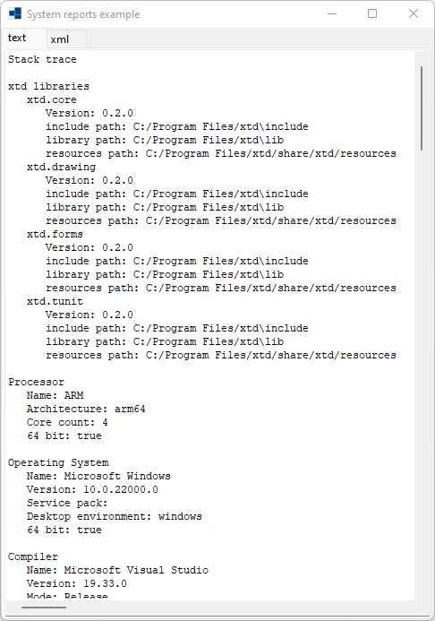
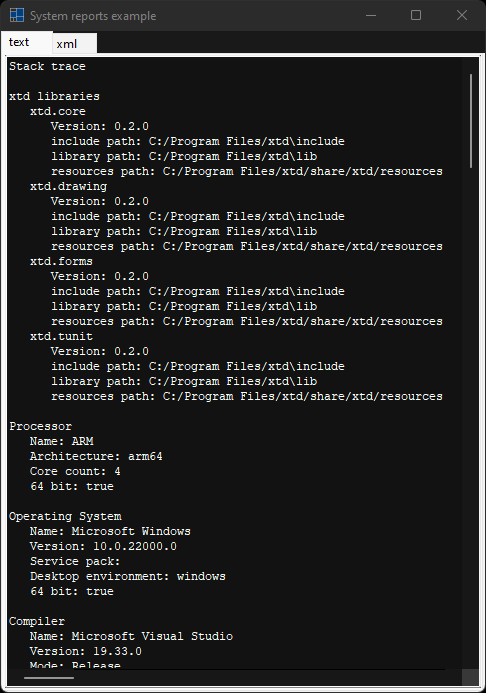
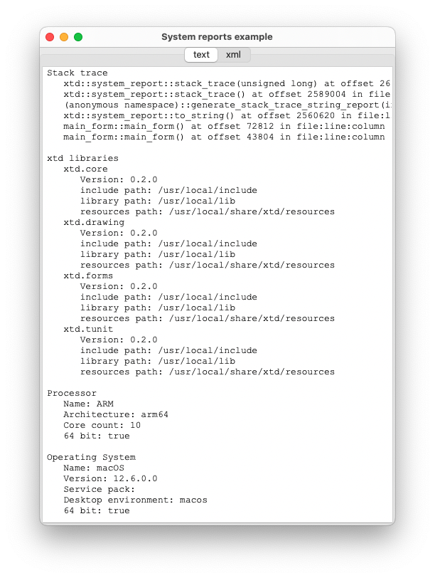
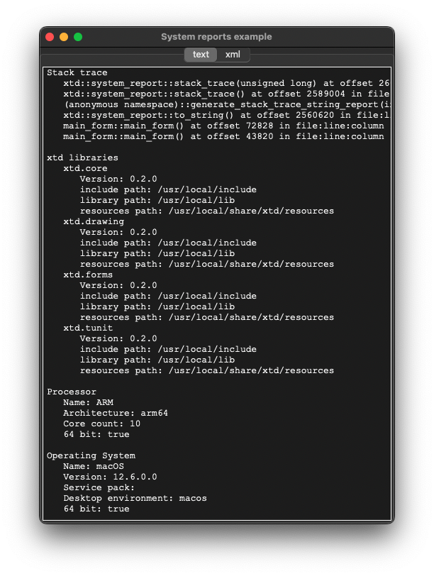
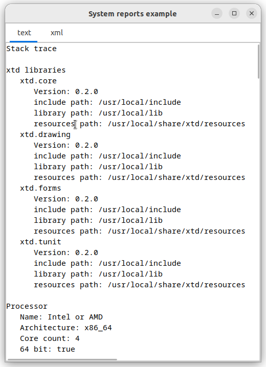
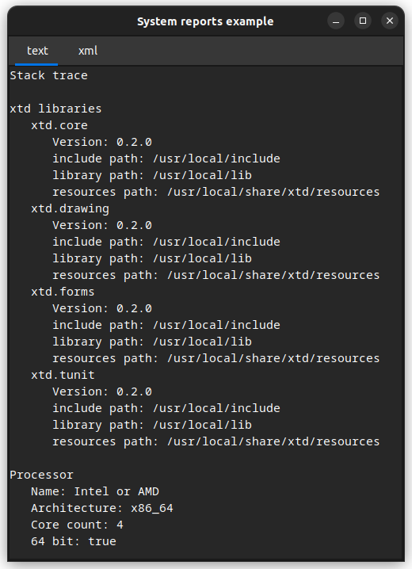

|
xtd
0.2.0
|
system_report.cpp
represents an example of system_report with xtd::forms::text_box control.
- Windows
- 

- macOS
- 

- Gnome
- 

#include <xtd/forms/application>
#include <xtd/forms/form>
#include <xtd/forms/tab_control>
#include <xtd/forms/tab_page>
#include <xtd/forms/text_box>
#include <xtd/system_report>
using namespace xtd;
using namespace xtd::forms;
public:
main_form() {
text("System reports example");
start_position(form_start_position::center_screen);
size({500, 700});
report_tab_control.dock(dock_style::fill);
report_tab_control.parent(*this);
report_tab_control.tab_pages().push_back_range({text_report_tab_page, json_report_tab_page, xml_report_tab_page});
text_report_tab_page.text("text");
json_report_tab_page.text("json");
xml_report_tab_page.text("xml");
text_reports_text_box.dock(dock_style::fill);
text_reports_text_box.font({drawing::font_family::generic_monospace(), text_reports_text_box.font().size()});
text_reports_text_box.multiline(true);
text_reports_text_box.parent(text_report_tab_page);
text_reports_text_box.read_only(true);
text_reports_text_box.text(system_report::to_string());
text_reports_text_box.word_wrap(false);
json_reports_text_box.dock(dock_style::fill);
json_reports_text_box.font({drawing::font_family::generic_monospace(), json_report_tab_page.font().size()});
json_reports_text_box.multiline(true);
json_reports_text_box.parent(json_report_tab_page);
json_reports_text_box.read_only(true);
json_reports_text_box.text(system_report::to_json());
json_reports_text_box.word_wrap(false);
xml_reports_text_box.dock(dock_style::fill);
xml_reports_text_box.font({drawing::font_family::generic_monospace(), xml_reports_text_box.font().size()});
xml_reports_text_box.multiline(true);
xml_reports_text_box.parent(xml_report_tab_page);
xml_reports_text_box.read_only(true);
xml_reports_text_box.text(system_report::to_xml());
xml_reports_text_box.word_wrap(false);
}
private:
tab_control report_tab_control;
tab_page text_report_tab_page;
tab_page json_report_tab_page;
tab_page xml_report_tab_page;
text_box text_reports_text_box;
text_box json_reports_text_box;
text_box xml_reports_text_box;
};
auto main()->int {
application::run(main_form());
}
static font_family generic_monospace() noexcept
Gets a generic monospace font_family.
static void run()
Begins running a standard application message loop on the current thread, without a form.
static xtd::ustring to_json() noexcept
Generates json format string report.
xtd::forms::style_sheets::control form
The form data allows you to specify the box of a form control.
Definition: form.h:21
@ text_box
The system-defined color of the accent color (macos specific. On other platform is same as window).
@ text
The xtd::forms::status_bar_panel displays text in the standard font.
@ fill
All the control's edges are docked to the all edges of its containing control and sized appropriately...
@ center_screen
The form is centered on the current display, and has the dimensions specified in the form's size.
The xtd::forms namespace contains classes for creating Windows-based applications that take full adva...
Definition: about_box.h:13
The xtd namespace contains all fundamental classes to access Hardware, Os, System,...
Definition: system_report.h:17
Generated on Sun Oct 1 2023 07:46:01 for xtd by Gammasoft. All rights reserved.